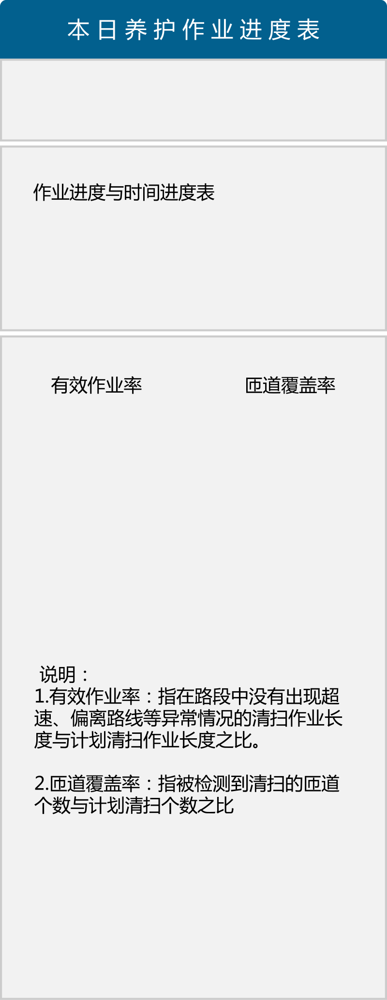

Toggle navigation
上海市快速路养护监管系统
首页
基础数据
停车场管理
车辆管理
RFID监测点管理
包件信息管理
电子围栏管理
监管规则管理
计划管理
养护作业计划
作业线路管理
布点计划
驾驶员计划
进度管理
养护进度监控
实时监控
养护日志管理
历史数据
历史轨迹查询
历史视频查询
异常查询
报表查询
牵引车辆位置报表
养护车辆作业区域
养护车辆作业情况
养护车辆超速
系统管理
用户管理
权限管理
网络状态图
欢迎， 领导
Profile
Inbox
7
Settings
Log Out
首页
选择查看区域
按照区域查
上海成基公司
中环路
中环路立交
上中路隧道
军工路隧道交
外滩隧道
上海高架养护公司
内环高架路路
按照车辆查看
上海高架养护公司
清扫车
沪BD4802
沪BD4802
牵引车
沪BD4802
沪BD4802
显示车速
显示车牌
显示路径

上海
50% 247km